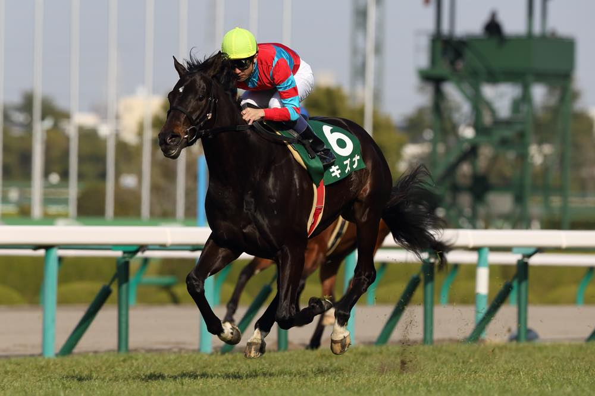

「日本中を繋いだ奇跡の末脚」親子二代ダービー馬
キズナ

父ディープインパクトにそっくりの爆発的な末脚を武器に、第80回日本ダービーを制覇。主戦の武豊騎手に「僕は帰ってきました」という名言を言わしめ、低迷期にあった名手と日本競馬界を再び熱狂の渦に巻き込みました。フランス・ニエル賞制覇など、世界にもその名を轟かせた「絆」の結晶です。
基本データ
- 主な鞍上： 武豊、佐藤哲三
- 獲得賞金： 約5億8000万円
- 通算成績： 14戦7勝
- 脚質： 差し・追い込み
-
血統（父母）：
- ディープインパクト
- キャットクイル
能力パラメータ
※独自解析による競走能力アーカイブ
全戦績
| 年 | レース名 | 着順 | 着差 | 鞍上 |
|---|---|---|---|---|
| 2012 | 2歳新馬 | 1着 | 1 1/2馬身 | 佐藤哲三 |
| 2012 | 黄菊賞 | 1着 | 1 1/4馬身 | 武豊 |
| 2012 | ラジオNIKKEI杯2歳S | 3着 | 0.1秒 | 武豊 |
| 2013 | 若駒S | 1着 | 2馬身 | 武豊 |
| 2013 | 弥生賞 | 5着 | 0.1秒 | 武豊 |
| 2013 | 毎日杯 | 1着 | 3馬身 | 武豊 |
| 2013 | 京都新聞杯 | 1着 | 1 1/2馬身 | 武豊 |
| 2013 | 日本ダービー | 1着 | 1/2馬身 | 武豊 |
| 2013 | ニエル賞(仏G2) | 1着 | 短頭 | 武豊 |
| 2013 | 凱旋門賞(仏G1) | 4着 | 5馬身 | 武豊 |
| 2014 | 産経大阪杯 | 1着 | キレ | 武豊 |
| 2014 | 天皇賞・春 | 4着 | 0.1秒 | 武豊 |
| 2015 | 京都記念 | 3着 | 0.1秒 | 武豊 |
| 2015 | 大阪杯 | 2着 | 2馬身 | 武豊 |
| 2015 | 天皇賞・春 | 7着 | 0.6秒 | 武豊 |
主な産駒（子供たち）
※名前をクリックすると詳細ページへ移動できます
伝説の瞬間：武豊の帰還
2013年、日本ダービー。キズナがゴール板を駆け抜けた瞬間、東京競馬場は割れんばかりの「ユタカ」コールに包まれました。長く苦しい時期を過ごした武豊騎手が、この馬と共に最高の栄冠を手にした姿は、多くのファンの涙を誘いました。ニエル賞では世界王者の英ダービー馬を撃破。まさに「キズナ」の名の通り、人と馬、そしてファンを強く結びつけた一頭でした。